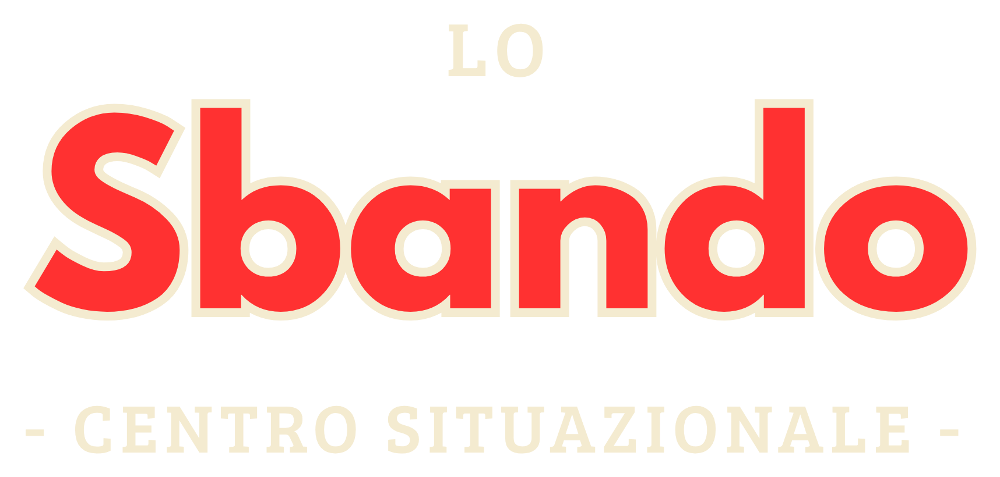

Un luogo fisico nel quartiere San Donato, a Torino, dove le persone si incontrano e, per il fatto stesso di incontrarsi, fanno accadere cose.
Cos'è un Centro Situazionale?
Innanzitutto è un luogo fisico, in cui le persone possono andare e nel quale possono incontrarsi. Da qui, “Centro”.
Poi è un luogo in cui, per il fatto stesso che due o più persone ci si incontrano, accadono cose. Si riattivano energie sociali, si ritrovano partecipazione e senso di appartenenza, si coltiva meraviglia. Il tutto non come consumatori e consumatrici - anzi, proprio in contrasto con una logica di socialità e di cultura come beni di consumo - ma come partecipanti, promotori, collaboratori. Da qui, “Situazionale”.
Piazza Innocenzo Vigliardi Paravia 9/B
10144 Torino
Calendario situazionale
Ogni settimana
- Lunedì · Tai Ki Kung -
- Lunedì · Yoga -
- Martedì · Danze del Sud -
Novembre 2026
| Lun | Mar | Mer | Gio | Ven | Sab | Dom |
|---|---|---|---|---|---|---|
| 1 | ||||||
| 2 - Tai Ki Kung e yoga | 3 - Danze del Sud | 4 - La Notte della Sbatta | 5 | 6 | 7 | 8 - Vino e Crochet |
| 9 - Tai Ki Kung e yoga | 10 - Danze del Sud | 11 | 12 | 13 | 14 - Fusion Nest | 15 - Qualcosa faremo |
| 16 - Tai Ki Kung e yoga | 17 - La Ghenga dei Libri e Danze del Sud | 18 | 19 - Folk2Folks | 20 | 21 | 22 - Piante d'Asporto |
| 23 - Tai Ki Kung e yoga | 24 - Danze del Sud | 25 | 26 | 27 - serata trivia e Jam Donato | 28 | 29 - Passaggi |
| 30 - Tai Ki Kung e yoga |
- La Notte della SbattaAdmin night: porta il portatile e il tuo rospo
- Vino e CrochetUncinetto e un bicchiere di vino in compagnia
- Fusion NestWorkshop e social dance di danza fusion
- Qualcosa faremoSerata con musica, aperitivo e chiacchiere
- La Ghenga dei LibriIncontro del book club
- Folk2FolksIncontro con Folk sui viaggi di gruppo co-progettati con le comunità che li ospitano
- Piante d'AsportoScambio di piante
- Serata trivia
- Jam DonatoJam session di quartiere: porta il tuo strumento
- PassaggiLaboratorio di danzaterapia
Progetti
Piante d'Asporto
L'evento di scambio per chi ha tante piante, forse troppe, sicuramente doppie.
Tutt* Bocciat*
L'evento per ignorant* delle bocce che unisce giovani e diversamente giovani.
Prove Aperte
Un varietà che non ce l'ha fatta. Spazio aperto a performer che vogliono mettersi alla prova.
La Notte della Sbatta
Insieme contro le forze degli arretrati. E del male. Admin night: porta il portatile e le tue burocrazie da smazzare, esci con una cosa in meno da fare. E qualche amic* in più.
Qualcosa Faremo
Aggregazione, senza pressione. Torniamo a incontrarci perché sì.
Jam Donato
La prima jam di quartiere. Porta il tuo strumento o anche solo la voglia di battere le mani (possibilmente a tempo).
La Ghenga dei Libri
Un book club molto swag, ma rigorosamente non performativo.
Vino e Crochet
Chiacchiere, vino e uncinetto. L'unico evento approvato anche da tua nonna.
Vieni allo Sbando
Indirizzo: Piazza Innocenzo Vigliardi Paravia 9/B, 10144 Torino
Email: associazionelasituazione@proton.me
Instagram: @lo_sbando
Hai un'idea per una serata, un corso, uno scambio? Scrivici.